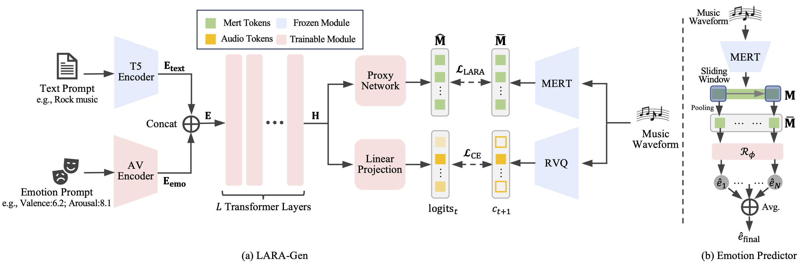

Abstract
Recent advances in text-to-music models have enabled coherent music generation from text prompt, yet fine-grained emotional control remains unresolved. We introduce LARA-Gen, a framework for continuous emotion control that aligns the internal hidden states with external music understanding model through Latent Affective Representation Alignment (LARA), enabling effective training.
In addition, we design an emotion control module based on a continuous valence-arousal space, disentangling emotional attributes from textual content and bypassing the bottlenecks of text-based prompting.
Furthermore, we establish a benchmark with a curated test set and a robust Emotion Predictor, facilitating objective evaluation of emotional controllability in music generation.
Extensive experiments demonstrate that LARA-Gen achieves continuous, fine-grained control of emotion and significantly outperforms baselines in both emotion adherence and music quality.
Model Architecture

(a) LARA-Gen framework. A Proxy Network Pθ aligns the internal hidden states H of the backbone model with target features M̄ from a frozen MERT encoder.
(b) The architecture of Emotion Predictor. It uses a sliding window over MERT features and an Emotion Regression Head Rφ to produce a final valence-arousal prediction from given music.
Music Generation Comparison
The following examples illustrate emotional music generated by different systems. Vanilla CE Finetuning and LARA-Gen take continuous emotion values as input (e.g., V: 2.10, A: 3.60), whereas Emotion Text Prompting utilizes the corresponding emotion lexicon from ANEW as input (e.g., anxious).
| Emotional Prompt | Ground Truth | Emotion Text Prompting | Vanilla CE Finetuning | LARA-Gen |
|---|
BibTeX
@article{Mei2024LARAGen,
title={LARA-Gen: Enabling Continuous Emotion Control for Music Generation Models via Latent Affective Representation Alignment},
author={Jiahao Mei and Xuenan Xu and Zeyu Xie and Zihao Zheng and Ye Tao and Yue Ding and Mengyue Wu},
journal={arxiv},
year={2025},
url={https://arxiv.org/abs/2510.05875}
}